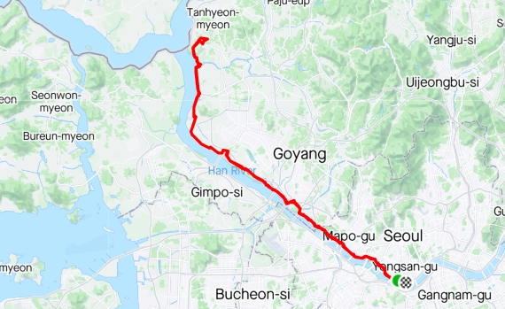
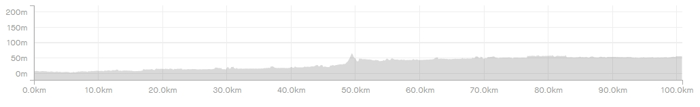

| 코스명 | 평화누리 코스 |
| 코 스 | 이촌역-한강자전거길-행주산성-평화누리길4코스-평화누리길5코스-평화누리길6코스-성동사거리-헤이리 |
| 거 리 | 50km (왕복 100km) |
| 시 간 | 2시간 30분 (왕복 5시간) |


처음으로 딸이 100km에 도전하는 날이라 걱정반 기대반 라이딩을 시작했습니다.
이촌역까지 지하철로 이동하고 이촌역에서 부터 평화누리길로 한강의 북쪽을 이용하여 라이딩하였으며, 비교적 평지라 순탄한 라이딩 코스였습니다.
간간이 자전거 길이 연결되는 곳이 공도와 함게 이용하도록 되어 있었으며 이제 기온이 라이딩하기 좋은 계절이라 많은 사람들이 라이딩을 하고 있었습니다.
일단은 평화누리길을 이용하여 딸이 좋아하는 헤이리에서 점심을 먹기로 하였으나, 1시 40분쯤 도착하니 이미 브레이크타임이라 가려고 하였던 식당은 가지 못하고 그옆의 베이커리에서 맛있는 식사를 하고 복귀하였습니다.
갈때에는 천천히 20킬로 미만의 속도로 힐링 라이딩을 하면서 경치를 즐겼으며, 올때에는 체력이 떨어질 것을 예상하여 조금 빠른 25킬로 미만의 속도로 오던길을 다시 되돌아 왔습니다.
춘천역까지 80킬로 정도가 최장거리였던 딸은 80킬로가 넘어가면서 힘들지만 자신의 한계를 넘어서고 있는 것에 대한 뿌듯함 및 즐거움을 맛보게 되었으며 비로소 이촌역에 도착하는 순간 100km의 원대한 도전의 막을 내릴 수 있었습니다.
이번 라이딩은 힐링 및 한계의 도전이라는 두마리의 토끼를 다잡은 라이딩이었으며, 100km클럽에 들어온 딸 축하해 !